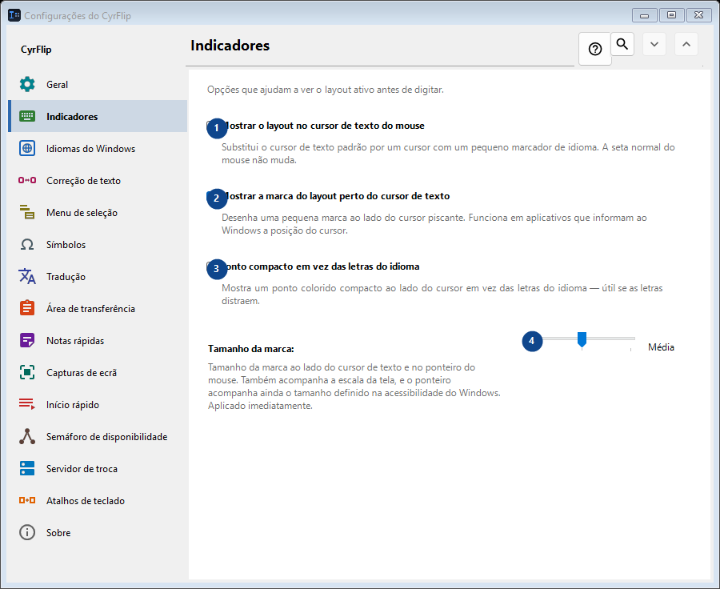
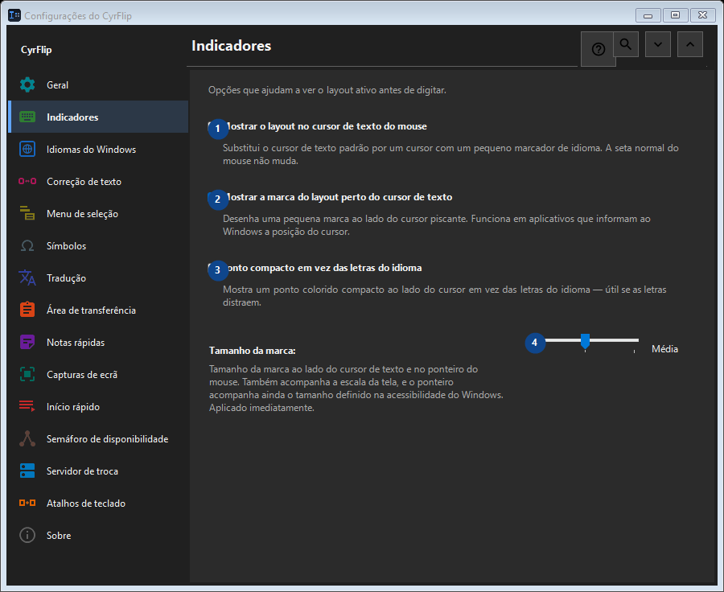

Indicadores
Para que serve
Opções que ajudam a ver o layout ativo antes de digitar.


Ordem de utilização
As definições são aplicadas de imediato. Não existe uma ordem obrigatória; use os grupos abaixo.
Elementos
1. Mostrar o layout no cursor de texto do mouse
Substitui o cursor de texto padrão por um cursor com um pequeno marcador de idioma. A seta normal do mouse não muda.
Os seus atalhos2. Mostrar a marca do layout perto do cursor de texto
Desenha uma pequena marca ao lado do cursor piscante. Funciona em aplicativos que informam ao Windows a posição do cursor.
Os seus atalhos3. Ponto compacto em vez das letras do idioma
Mostra um ponto colorido compacto ao lado do cursor em vez das letras do idioma — útil se as letras distraem.
Os seus atalhos4. Tamanho da marca
Escolha ou introduza o valor da etiqueta adjacente. Verifique-o antes de continuar.
Os seus atalhos